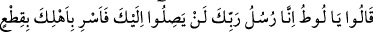
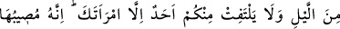
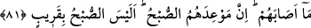

yardımcı bulunacağı konusunda çok büyük bir yeis ve tam bir ümitsizliğe düşmek
mânâsına geleceği için ona yakışmadığına işâret ediyor. Oysa sığındığı Zât’tan daha
güçlü bir sığınak yoktur. Allah Teâlâ hiç kuluna yetmez mi?”
İbn Abbas (r. anhümâ)’nın şöyle dediği rivâyet edilmiştir: “Allah Teâlâ Lût (a.s.)’dan
sonra gönderdiği tüm peygamberleri kavimleri içerisinde güç sahibi olarak
göndermiştir.” Yani dâvetleri zarûri olarak benimsenmiştir. Hz. Peygamber (s.a.)’i de
kabilesinin Ebû Tâlib gibi fertleri himâye ederdi. Ebû Tâlib akrabalık bağlarını göz
önünde bulundurarak O’na daima göğüs gererdi. Hz. Peygamber (s.a.) de zâten hicret
etmeye Ebû Tâlib’in vefâtından sonra mecbûr kaldı.
81. (Melekler) dediler ki: “Ey Lût, biz Rabb’inin elçileriyiz. Onlar sana asla
dokunamazlar. Sen gecenin bir kısmında âilenle (yola çıkıp) yürü. Karından başka
sizden hiçbiri geride kalmasın. Çünkü onlara gelecek olan (azap) şüphesiz ona da
isâbet edecektir. Onlara vâdedilen (helâkin) zamanı sabah vaktidir. Zaten sabah da
yakın değil mi?”
Rivâyet edilir ki kavmi gelince Lût (a.s.), misafirlerini korumak maksadıyla kapıyı
kapadı ve kapının arkasından onlarla mücadeleye başladı. Kavmi de bunun üzerine
duvara tırmandılar. Melekler Lût (a.s.)’ın içinde bulunduğu bu sıkıntılı durumu görünce
“dediler ki: “Ey Lût, biz Rabbinin elçileriyiz. Onlar sana asla dokunamazlar.” Sana
hiçbir zarar ve sıkıntı veremezler. Biz varken seni mahcup da edemezler. Çünkü senin
dayanağın kuvvetlidir. Kapıyı aç, bizi onlarla baş başa bırak. Bunun üzerine Lût (a.s.)
kapıyı açtı. Oradakiler de içeri girdi. Bu sırada Cebrail (a.s.) onları cezalandırmak için
Rabb’inden izin istedi. Rabbi de izin verdi. İzni alan Cebrail (a.s.) aslî sûretine
bürünmüş olarak kalkıp kanadını açtı.
Cebrail (a.s.)’ın iki kanadı vardır. Bu kanatların üzerinde dizilmiş inciden bir kuşak
vardır. Parlak ve bembeyazdır.
Kanadıyla yüzlerine vurarak gözlerini kör etti. Nitekim Allah Teâlâ: “Bunun üzerine
gözlerini kör ettik.” (el-Kamer, 54/37) buyurmuştur. Artık yollarını bulamıyorlardı.
“İmdat imdat! Lût’un evinde büyücüler var.” diye bağırarak dışarı çıktılar. Bir yandan
da “Sabahleyin görürsün sen!” diye tehdit ediyorlardı.
“Sen gecenin bir kısmında” yani gecenin sonunda ya da İbn Abbas (r.anhümâ)’nın